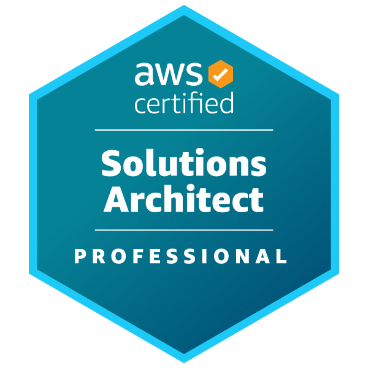
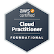
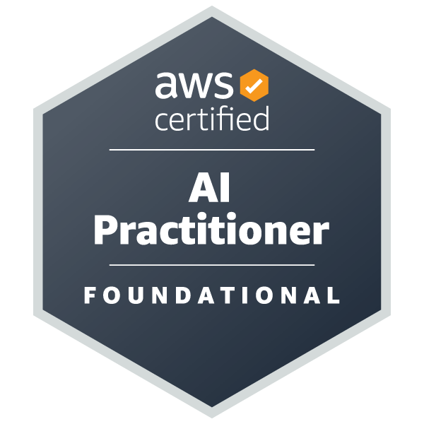

Sou apaixonado por DevOps e Cloud Computing. Comecei minha carreira resolvendo problemas técnicos no dia a dia, e isso me mostrou o valor de automatizar tudo que é possível. Hoje trabalho com Terraform, Git e AWS para construir infraestruturas que funcionam de forma eficiente e escalável.
Acredito que boas práticas de engenharia transformam operações manuais e caóticas em processos automatizados, previsíveis e resilientes. Meu objetivo é criar ambientes que não apenas funcionam bem, mas que permitem que os times trabalhem com agilidade e confiança.
Estou sempre aprendendo e evoluindo. Certificações AWS validam meu conhecimento, mas o que realmente me motiva é resolver problemas reais e entregar soluções que fazem diferença no negócio.
DevOps
DreamSquad | abr 2026 - Atual- Automatizar processos e rotinas operacionais.
- Configurar e manter pipelines de CI/CD.
- Apoiar na identificação e resolução de problemas de infraestrutura em nuvem.
- Criar e manter monitoramento da camada sistêmica dos clientes.
- Contribuir com documentação técnica e aprender continuamente sobre boas práticas de engenharia.
AWS Technical Trainer
Escola da Nuvem | jan 2026 - atual- Aulas técnicas em Cloud Computing (AWS), capacitando alunos desde os fundamentos de nuvem até a utilização prática dos principais serviços e arquiteturas da AWS.
- Condução de atividades práticas (hands-on) e laboratórios, orientando os alunos no provisionamento, configuração e gerenciamento de recursos AWS, garantindo autonomia técnica e consolidação do aprendizado.
- Aplicação de avaliações e desafios técnicos semanais, com foco na validação da retenção de conteúdo, identificação de dificuldades e reforço dos principais conceitos abordados.
- Execução de simulados direcionados à certificação AWS, acompanhando o desempenho dos alunos e orientando estratégias para melhoria dos resultados na prova.
- Acompanhamento contínuo da evolução dos alunos, oferecendo suporte, esclarecendo dúvidas e promovendo boas práticas no uso dos serviços AWS.
- Coleta e análise de feedbacks dos alunos, identificando oportunidades de melhoria no processo de ensino-aprendizagem e contribuindo para a evolução do conteúdo e da metodologia aplicada.
- Organização e registro das atividades acadêmicas, avaliações e interações, garantindo acompanhamento estruturado do progresso dos alunos e eficiência na condução das turmas.
Analista de Relacionamento
Conciliador Contábil | out 2024 - out 2025- Realizei treinamentos de sistemas de automação fiscal, melhorando a adoção da plataforma pelos clientes.
- Prestei suporte técnico e operacional, resolvendo dúvidas e problemas complexos do sistema.
- Desenvolvi documentação técnica e colaborei com equipes internas para melhorias do produto.
- Conduzi sessões de onboarding para novos usuários da plataforma de automação fiscal.
- Analisei feedback dos clientes e identifiquei oportunidades de melhoria nos processos.
- Colaborei com a equipe de desenvolvimento na especificação de novas funcionalidades.
- Mantive comunicação ativa com clientes para garantir satisfação e retenção.
Analista de Suporte Técnico
CSJ Sistemas | set 2022 - out 2023- Realizei análises de média e alta complexidade em arquivos e bancos de dados (SQL) para solucionar problemas.
- Apliquei orientações técnicas baseadas em regras de negócio e implementei soluções para otimizar o desempenho dos sistemas.
- Participei ativamente em projetos de melhoria contínua dos processos de suporte.
- Executei consultas SQL complexas para investigar inconsistências em dados e relatórios.
- Configurei e manteve ambientes de teste para validação de correções antes da produção.
- Documentei procedimentos técnicos e criou base de conhecimento para a equipe de suporte.
- Atendi chamados de suporte técnico de nível 2 e 3, escalando quando necessário.
- Colaborei com desenvolvedores na identificação e correção de bugs em sistemas.
- Realizei testes de funcionalidades e validação de correções em ambiente controlado.
Operador de Suporte Técnico
Brisanet Telecomunicações | jan 2020 - set 2022- Realizei análises de tráfego de rede, verifiquei taxas de upload/download e sinal de fibra ótica.
- Diagnostiquei e resolvi problemas de conectividade, configurei roteadores e monitorei a rede de forma proativa.
- Atendi chamados de suporte técnico para clientes residenciais e corporativos via telefone e chat.
- Configurei e otimizei roteadores, modems e equipamentos de rede para melhorar performance.
- Realizei testes de conectividade e velocidade para validar qualidade do serviço.
- Documentei incidentes técnicos e mantive registro detalhado de resoluções.
- Colaborei com equipes de campo para resolução de problemas de infraestrutura.
- Monitorou indicadores de qualidade de serviço (QoS) e latência da rede.
- Prestou suporte para configuração de redes domésticas e empresariais.
- Identificou padrões de falhas e sugeriu melhorias preventivas na infraestrutura.
Infraestrutura como Código (IaC) com Vagrant e Ansible
Projeto prático de automação de infraestrutura que demonstra conceitos de IaC através da criação de um ambiente de desenvolvimento local automatizado. O projeto utiliza Vagrant para provisionamento de máquina virtual e Ansible para configuração e instalação de serviços (Nginx, PHP e MariaDB).
O objetivo é mostrar como automatizar a criação de ambientes de desenvolvimento, garantindo consistência e facilitando o setup para novos desenvolvedores. Inclui playbooks do Ansible, configurações do Vagrant e documentação para reproduzir o ambiente localmente.
Ver no GitHubMentoria Técnica em Nuvem e DevOps
Trabalho voluntário realizado na Escola da Nuvem como mentor para preparação de certificações em AWS e tecnologias DevOps. Desenvolvi simulados práticos, dicas de estudo e materiais didáticos para auxiliar outros profissionais na jornada de certificação.
O projeto inclui questões práticas baseadas em cenários reais, guias de estudo estruturados e dicas para otimizar o tempo de preparação. O objetivo é compartilhar conhecimento e apoiar a comunidade técnica no processo de certificação em cloud computing.
Ver no GitHubWRS-Project: Pac-Man - A Missão Comunitária
Jogo estilo Pac-Man com tema social desenvolvido em Python usando Pygame. O projeto aborda questões de pobreza e desigualdade, onde o jogador coleta recursos (Moedas, Alimentos, Livros, Tijolos) e os entrega em centros comunitários para desenvolver a comunidade.
O jogo inclui sistema de recompensas similar ao Microsoft Rewards com pontos, níveis, tarefas diárias e conquistas. Possui sistema de ranking entre jogadores, avaliação de feedback do usuário, diferentes níveis de dificuldade e modo visitante. Foi desenvolvido com arquitetura modular, seguindo boas práticas de código (PEP 8), com tratamento de erros robusto e interface completa com HUD, inventário e animações.
Ver no GitHubCertificações

AWS Certified Solutions Architect – Professional- AWS Certified Solutions Architect – Associate
- AWS Certified Developer – Associate

AWS Certified Cloud Practitioner
AWS Certified AI Practitioner- Microsoft Certified: Security, Compliance, and Identity Fundamentals (SC-900)
- Microsoft 365 Certified: Fundamentals (MS-900)
Cursos e Formações
- Bootcamp DevOps - Atlântico Avanti (2025)
- Desenvolvedor AWS (2025)
- Preparatório Para Arquitetura de Soluções em Nuvem AWS - Proz (2025)
- Formação para Arquiteto de Soluções AWS - Escola da Nuvem (2024)
- Talent Cloud - Programação com foco em Front-End - Proz (2024)
- Redes e Linux Essentials para AWS - Proz (2024)
- Linux Essentials - LINUXtips (2023)
- Redes TCP/IP - DIO (2023)